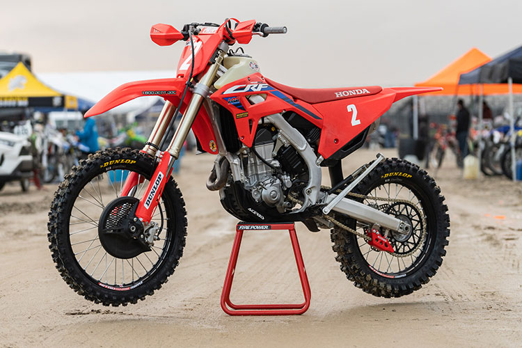

Motokrossz

Motokrossz (gyakran rövidítik MX-nek vagy MotoX-nek). A motokrossz szó az első világháborúban fogant az angol hadseregben. A motorcycle (motorkerékpár) és cross (át, keresztül) összetételéből keletkezett, tehát motorral mindenen keresztül. Miután a motokrossz veszélyes sport, magas szintű koncentrációt, gyors reflexeket, alacsony reakcióidőt és nem utolsósorban hatalmas fizikai állóképességet igényel. Gyakoriak a bukások, balesetek, ezért számos előírás szabályozza a versenymotor felszerelését, a versenyző öltözékét. A motor sárvédőinek hossza, a lábtartó szerkezeti kivitele, a kuplung és fékkar kialakítása, a rajtszámtábla elhelyezése ugyanúgy szabályozott, mint a csizma, speciális nadrág és mez, bukósisak, szemüveg és kesztyű viselése.
Története
Egy brit őrmester valamikor a század elején úgy rendelkezett[forrás?], hogy a katonák számára kötelező motoros terepgyakorlatot nem a laktanyán kívül, hanem azon belül a gyakorló téren tartsák meg, mivel így jobban szemmel tartható a feladat végrehajtása.[forrás?] Ez volt az „ősgondolat”, s miután a dolog bevált, ezután mindig így csinálták. Innen már csak egy lépés volt az út az egésznek a sportba való átemeléséhez, hiszen mindenki volt katona, meg a motorsportok mindig is kötődtek a honvédséghez.[forrás?] Később ugyanennek a brit tisztnek a nevéhez fűződik a teremcross feltalálása, lévén hogy később már a laktanya épületén belül is (lépcsőre fel, pincébe le, stb…) jelölt ki pályát.[forrás?]
Angolok, belgák, svédek voltak az első krosszmotorosok és Namúrban (Belgium) rendezték meg az első hivatalos motokrossz versenyt, ahol a mai napig rendeznek versenyeket. Eleinte csak természetes akadályok voltak a pályán és nem jelölték ki pontosan a pálya nyomvonalát, csupán egymástól bizonyos távolságra elhelyezett kapuk között kellett áthaladniuk, mint a síelők a szlalompályán. A nagy ötszázas négyütemű, a terepet is jól bíró utcai motorok közül kerültek ki az első krosszmotorok, mint a BSA, AJS, Velocette és a többiek. Kisebb hengerűrtartalmú gépeket ekkor még nem használtak, mivel a nehéz terephez erejük nem volt elégséges. A motokrossz nem fejlődhetett volna, ha a technika nem indul rohamos fejlődésnek.
A nagy áttörést a kétütemű motorok megjelenése hozta. Ezek a gépek a négyüteműeknél jóval könnyebb és erősebb motorok voltak, és hamarosan a határ a csillagos ég lett. Már évekkel ezelőtt eljutottunk oda, hogy ugyan tehetnénk még néhány lóerőt a motorokba, de minek, ha nincs ember aki meg tudja ülni. Ma egy 125-ös kétütemű crossmotor 86 kg súlyú és 40 lóerőt teljesít széria kivitelben, ami bármilyen nehéz terep leküzdésére alkalmassá teszi. Napjainkban a motokrossz sport extrém irányvonalon is fejlődik. A stadioncross majdnem két évtizede, a free-style néhány éve rohamosan fejlődik. Ebben a stílusban a „legmenőbb” Magyarországon Németh Kornél, aki szabadtéri crossban is remekel az osztrák KTM gyári VB csapat versenyzőjeként.
Magyar sikerek
A magyarországi motokrossz kezdetét az egyes források más-más évszámhoz kötik. Kökényesi könyvében Sztankovics Sándor szakértő táblázata 1958-ban hozza az első motokrossz bajnoki eredményeket, Rózsa György neves sportújságíró 1964-ben kiadott könyvében viszont 1957-es év motokrossz bajnokságának eredményeit ismerteti. Figyelmet érdemel azonban az az adat is, hogy 1955- ben terepgyorsasági versennyel bővült a magyar motorsport, és ki is írták a négy fordulós bajnokságot, melynek lebonyolítása lényegében megegyezett az akkor már Európa-szerte ismert motokrosszal. A szakág gyors fejlődését jellemzi, hogy cross versenyzőink már 1958-ban külföldön is rajthoz álltak. Az erősen Budapest bázisú motorsport vidéken is fejlődésnek indult, hiszen a motokrossz művelésére viszonylag könnyen lehetett pályát építeni. Már 1960-ban megtört a fővárosi hegemónia, hiszen Máté és Harangvölgyi mellett a vidék is bajnoki címeket szerzett a szabolcsi Nemes és a vásárhelyi Técsy Sándor személyében. Felejthetetlen nagy versenyzők tették népszerűvé a motokrosszt a nézők, sportrajongók tízezrei számára, de az évtized első felének izgalmas párharcát a sokszoros bajnok Máté Sándor és a trónkövetelő Técsy összecsapásai jelentették. Király kategóriában 1965- ben megtört a jég, melyről az 1966-ban kiadott "MHS Bajnokok" című könyv így ír: Az év nagy eredménye a hódmezővásárhelyi Técsy Sándor nevéhez fűződik, aki megtörte az 1958 óta veretlen bajnok Máté Sándor (Újpesti Dózsa) győzelmi sorozatát. Ezzel együtt mi sem bizonyítja jobban Máté sportemberi nagyságát mint az, hogy a következő két évben képes volt visszaszerezni az elvesztett koronát. De már Técsy mögött is felnőtt az új közönség kedvenc, az év 250-es bajnoka, az ajkai Simon Ferenc. A hihetetlen fizikummal és akaraterővel megáldott fiút az elsők között jelölték a motokrossz-világbajnokságra. A lengyelországi bemutatkozáson nem volt szerencséje géphiba miatt, Moszkvában rendezett VB. futamon 18. helyezett, a németországi Apoldában 17. lett és a Klagenfurtban tartott VB. futamban a 12. helyen fejezte be 1965-ben világbajnoki szereplését.
A következő évtized Simon és Mohácsi Jenő meghatározó szerepével folytatódott, majd jelentkeztek a későbbi bajnokok, egy- egy kivételes tehetség, mint például Kiss László, Czuni László, Nátó János, Závodni István. 1976-ra azonban a sportág átélte első nagy válságát, megszűnt az addig biztonságot nyújtó támogatási struktúra, neves klubok szűntek meg és sok helyen szélnek eresztették a versenyzőket. Az 1970-es évek végére azonban feltűnnek azok az új tehetségek, akik a következő évtized meghatározó szereplői lesznek, Németh Kornél, Borka János, Halász László, Gyurászik és a többiek. A sportág kiheverte a nehézségeket, cégek és vállalatok álltak a sportklubok mögé, jelentős támogatásokat biztosítva. A szakágnak első alkalommal áll az élére igazán hozzáértő sportember, az 1977 és 1978- évi 500-as motokrossz bajnok Kökényesi György személyében, aki nagy lendülettel építi a versenyrendszert és a válogatott csapatot. Szerencsés körülmény, hogy erre az időszakra esett egy jelentős interkontinentális versenysorozat megerősödése, a BBK, az un. Béke és Barátság Motocross Kupa, mely 7 ország részvételével bonyolítódott. A számos világbajnokságot nyert CZ krosszmotorok jelentős szerepet biztosítottak a keleti tömb versenyzőinek a világbajnokságokon és sorozatban nyerték is a versenyeket. A VB. menők csúcsformában tartásához és egy erős második vonal kialakításához szükség volt egy olyan versenysorozatra, mely felért egy VB-találkozó szintjével. A háromszoros világbajnok Mojszejev ugyanúgy rajthoz állt itt, mint a bronzérmes Rangelov, ill. Khudjakov, vagy Kuntz. Volt tehát lehetőség a nemzetközi szintű felzárkózásra. Ehhez még hozzá vehetjük, hogy erre az időszakra esett a két legjobb magyar krosszozó csúcsteljesítménye. Németh Kornél és Gyurászik László képes volt arra, hogy méltó ellenfelei legyenek a nemzetközi élvonal elején motorozó csehszlovák és szovjet versenyzőknek. Időközben kialakult a legfiatalabb korosztályból egy tehetséges utánpótlás gárda és 1982-ben kiírásra kerülhetett a 125-ös géposztály bajnoksága is.
Beköszöntött a magyar motokrossz sport egyik legsikeresebb korszaka. Az 1982-es BBK sorozaton Gyurászik megnyerte a német és szovjet, Németh Kornél a romániai versenyt. Későbbi világbajnoki szereplésüket ugyan nem kísérte különösebb szerencse, de az 1984-es BBK-ra keményen felkészült a csapat és Lengyelországban fölényes kettős győzelmet arattak, majd további futamgyőzelmekkel, nehéz küzdelmek árán megnyeri a magyar gárda az 1984. évi csapatversenyt és Németh Kornél diadalmaskodik egyéniben is. Sajnos, nem sokkal ezt követően a két kivételes krosszbajnok visszavonul. Közben a 125-ös géposztályban az évek során egy csendes kitartó versenyző gyűjti a bajnoki babérokat, a vásárhelyi Horváth Pál, összesen hetet.
Az évtized végén ismét két meghatározó, kivételes tehetség tartja lázban a szurkolókat, Kamrás Károly és Balogi Zoltán. Mellettük feltűnt újabb tehetséges gárda ellenére sajnos ismét mélypont következik a szakág történetében. Belső vitáktól, marakodásoktól hangosak a depók, soha nem tapasztalt gyűlölködés osztja meg a versenyzőket, szakvezetőket. A sajtó csak a szakág botrányairól ír és végül az 1990-es évek elején bekövetkezik a szakadás. A távozó kemény mag az MMSZ keretein belül alakít szakágat és beindítja az ún. amatőr versenyrendszert. Az időközben történt politikai rendszerváltás csak súlyosbítja a sport helyzetét, már azok a cégek is megszűnnek, akik eddig némi hátteret jelenthettek a kluboknak. Így nem maradt más lehetőség, minthogy a versenyzők maguk, ill. családjuk vállalja fel a versenyzés anyagi terheit. Mégis, furcsa módon egy néhány kivételes motokrossz ünnepnek örvendhet a hazai motorsport kedvelő publikum; a kaposvári Surján RT. jóvoltából zsinórban négy világbajnoki futamra is sor kerül Cserénfán. Ennek ellenére a szakágban a romló folyamat nem áll meg, egyre több versenyző követi a távozókat, a MAMS-ban vészesen lecsökken a bajnoki és díjversenyek száma. A konfliktus az egykor sikeres szakágvezető körül csúcsosodik ki, aki 1995 őszén lemond. A szakág romokban hever, eladósodva, mindössze 17 klubbal és alig 50 licences versenyzővel vág neki az 1996-os szezonnak. Új szakágvezetőnek Czuczi Győzőt választják meg, aki 1960-tól maga is motokrosszozott néhány évig, majd később a Szakági Bizottságban ténykedett és valamennyi hazai EB. és VB. futam technikai igazgatója volt. Az adósság állomány felszámolásával, stabil versenyrendszer kiépítésével és az utánpótlás bázis létrehozásával kezdi el a munkát és létre jön az, ami akkor a legfontosabb dolognak tűnt: a szakág belső békéje.
Ha lassan is, de a fejlődés megindult, egyre több klub vállalkozott versenyrendezésre, rendben folyt a bajnokság. De ebben az időben még egy veszteség érte a szakágat, itthon megszűnt az új és a világban oly népszerű versenyforma, a supercross. Közben az élsportban ismét sikeres neveket ismerhetett meg a motokrossz kedvelő közönség, többek között Grillmayer Gábor, Tóth Ádám, Soóky László, Iváfi Kornél, Hujber Péter mellett felragyogott egy új csillag: ifj. Németh Kornél neve. Ma élversenyzőink már szinte minden jelentős kontinentális versenyen rajthoz állnak, EB.-n, Európa Kupán és nincs olyan év, hogy a magyar csapat ne állna ott a Motocross des National rajtjánál. Németh Kornél pedig sikeresen járja kivételes útját, megszerezte hazánk számára az első motokrossz EB. érmet és VB. pontokat. Az utánpótlásra fordított figyelem is meghozta első eredményeit, az alig 10 főt számláló gárda néhány év alatt több mint 80 főre emelkedett és kiváló szakemberek, edzők tevékenysége igazán kivételes tehetségeket hozott felszínre. Soha sem szünetelt az a törekvés, hogy a motokrossz sport megosztottsága megszűnjön, és újra együtt meneteljen a gárda. Sok sikertelen egyeztetés, tárgyalás után, évek múltán mégis eljött az idő, amikor a motokrosszozók nagy családja egymásra talált. 2000. április 30-án létre jött az a verseny Koszárhegyen, amely az egyesülést jelentette és az óta is békében, és zavartalanul működik az amatőr gárda versenyrendszere, a III. osztályú bajnokság. Ma már 60 egyesület, 24 versenypálya, több mint 400 aktív versenyző bizonyítja a szakág életképességét és ad hitet ahhoz, hogy eredményes jövő, számtalan jelentős siker előtt áll a magyar motokrossz sport.